Find the answer by watching the video below!
POIRGA is my biggest research project. Together with my team, I developed POIRGA based on air pollution issues in my local area. By utilizing microalgae as a carbon dioxide (CO₂) absorber and oxygen producer, combined with sensor integration and real-time monitoring applications, POIRGA is expected to become an effective and sustainable IoT-based solution.
Interested in the technical details and research process? Read the full research paper (PDF)
The initial phase focused on system architecture planning, defining electronic component requirements and mechanical structure to optimize microalgae-based CO₂ absorption.
A detailed 3D model of the microalgae lamp structure was developed using Prisma 3D to evaluate geometry, component placement, and structural stability prior to fabrication.
Circuit schematics were created using Fritzing to visualize component interconnections and ensure accurate integration between sensor modules, microcontroller, and lighting system.
All electronic components were assembled into a functional prototype and tested to verify signal acquisition, sensor responsiveness, and system-level integration before field testing.
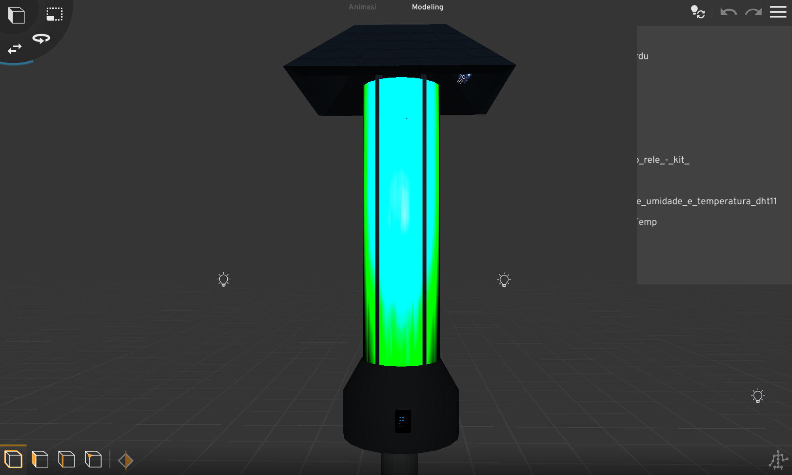
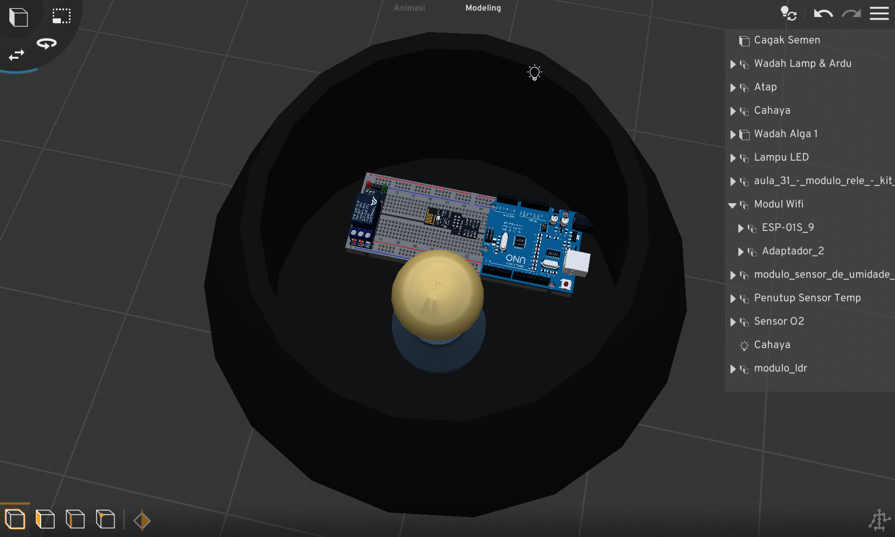
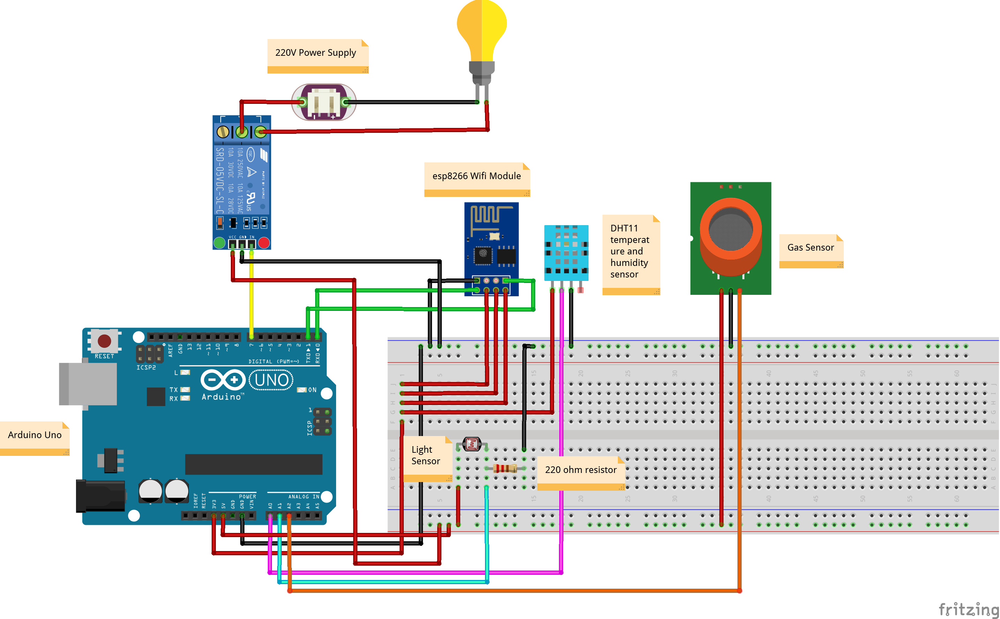
The prototype was constructed using recycled materials, including PVC pipes, lightweight metal, and acrylic tubes. The microalgae lamp roof was heat-shaped and assembled into a trapezoidal structure, then coated with matte and protective layers for durability. A transparent acrylic tube was used as the cultivation chamber to optimize light transmission for photosynthesis. Electronic components were housed in a corrosion-resistant metal enclosure, with structured cable management and a reinforced base to ensure stability and long-term functionality.
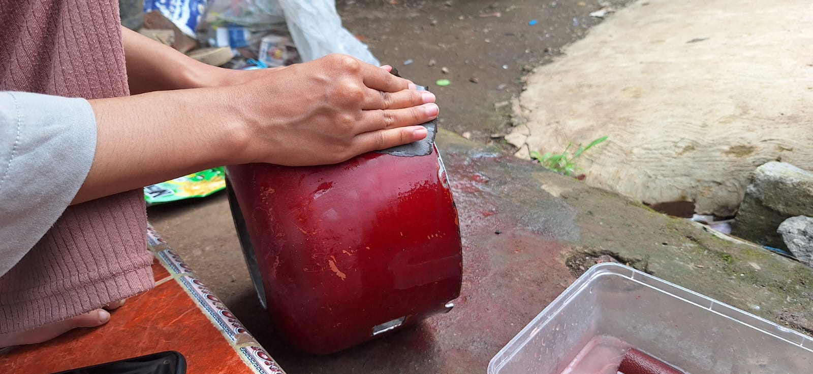
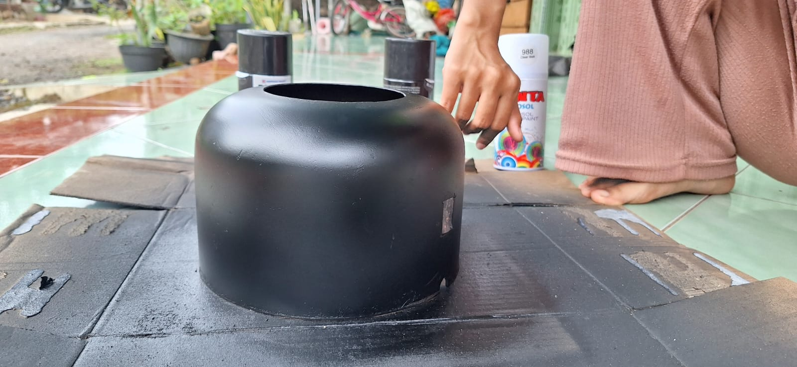
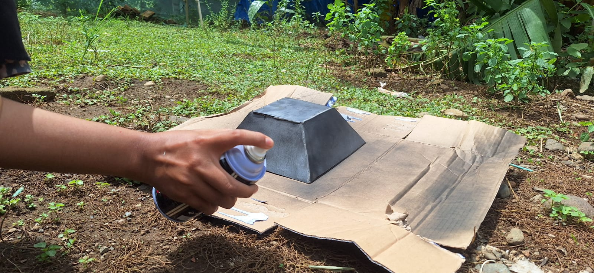
The cultivation phase began with the preparation of a nutrient medium to support optimal growth of Chlorella sp. Organic fertilizer was dissolved in water and combined with natural pond water containing microalgae to enrich microbial diversity. Hydrilla was added to maintain oxygen balance within the system through photosynthesis. The culture was exposed to continuous sunlight, with adequate ventilation to ensure proper gas exchange. At night, LED lighting with an appropriate spectrum was provided to sustain photosynthetic activity and maintain consistent CO₂ absorption performance.
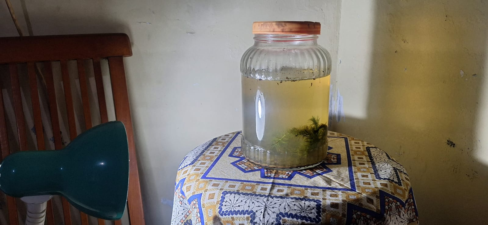
The experiment was conducted in two sealed chambers (19,440 cm³ each) to maintain controlled and comparable conditions. One chamber contained the microalgae-based system, while the other functioned as a control without treatment. CO₂ was generated through controlled paper combustion to simulate elevated carbon concentration. The microalgae system was positioned for optimal LED exposure to sustain photosynthetic activity during testing. CO₂ levels were monitored in real time using an MQ-135 sensor integrated with an Arduino Uno microcontroller.
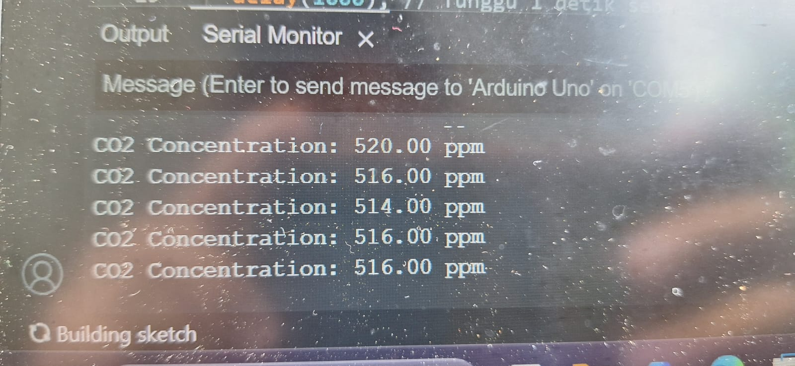
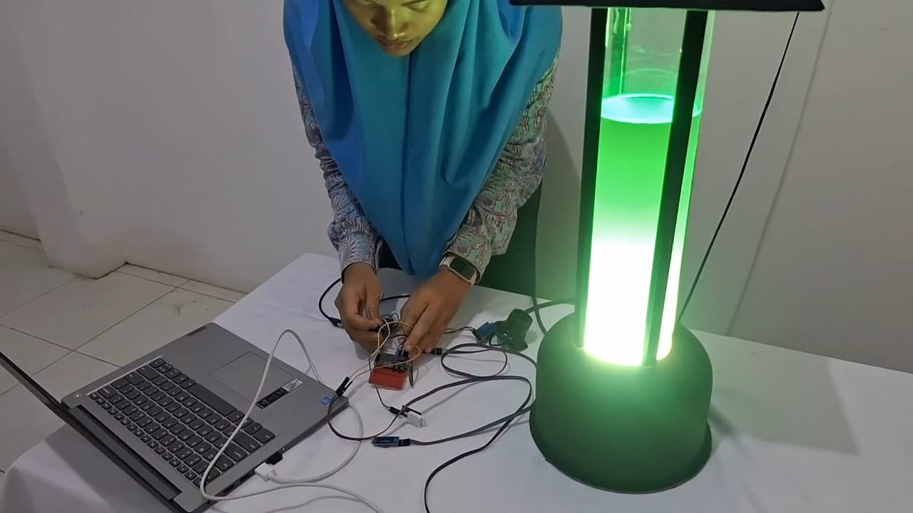
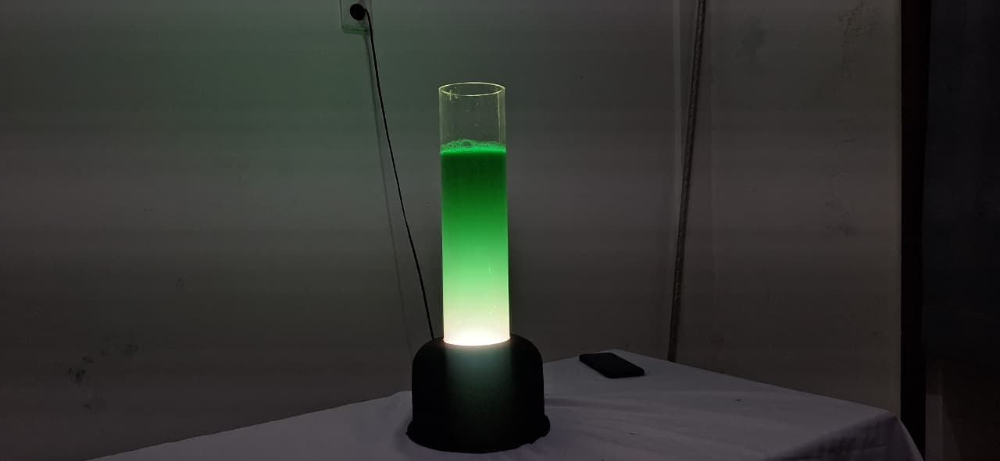
CO₂ concentration data from both experimental and control chambers were analyzed using descriptive statistical methods under controlled environmental conditions (19,440 cm³ volume, 88% humidity, 26.7°C). Measurements were recorded at 2-minute intervals over a 14-minute period.
Raw analog values from the MQ-135 sensor were converted to ppm using a calibrated linear transformation:
Where 400 ppm represents atmospheric baseline concentration and 2 is the empirically determined scaling factor.
This model quantifies net carbon reduction performance within the chamber environment.
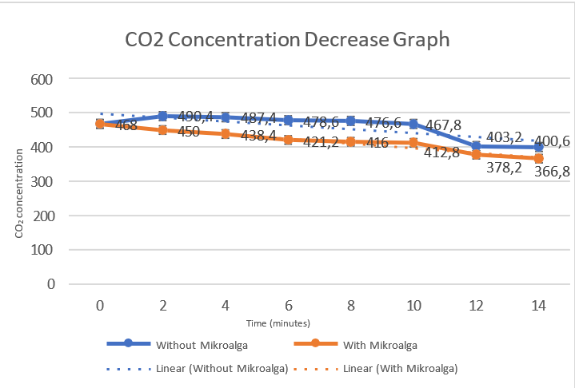
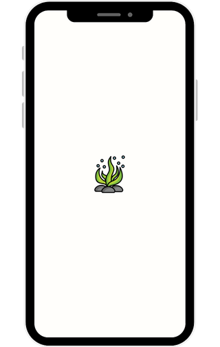
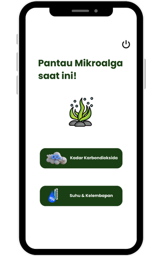
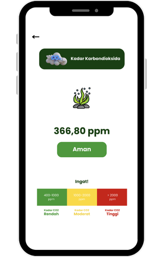
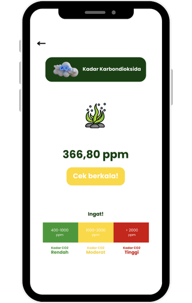
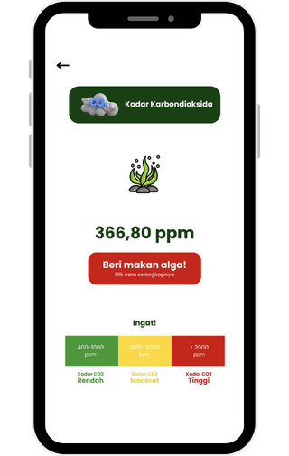
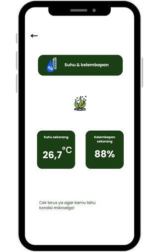
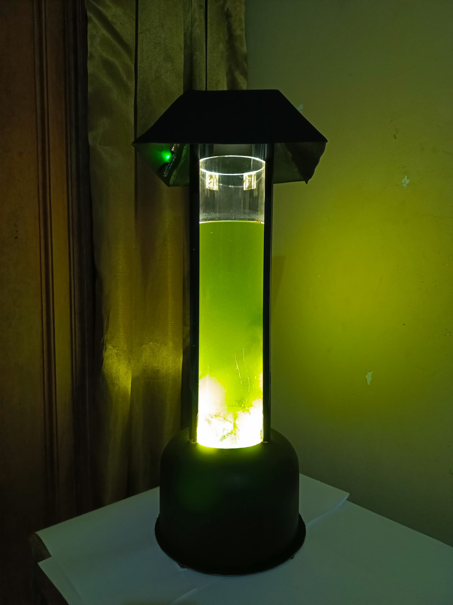